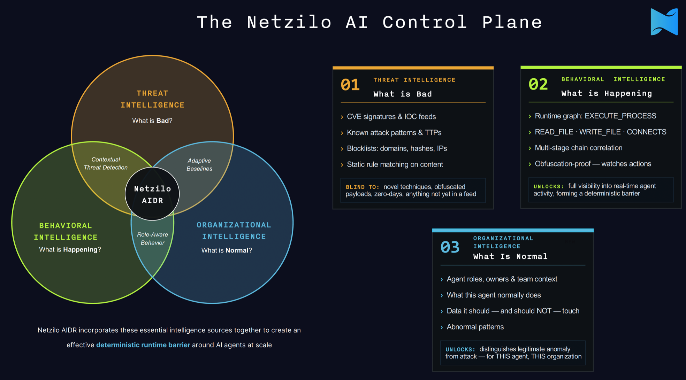

When we started building AIDR, the first question we kept running into wasn't about prompts or models. It was simpler than that: how do you know what an AI agent actually did?
Not what it said. What it did.
OWASP's State of Agentic AI Security and Governance addresses this directly. In agentic deployments, AI safety and AI security can no longer be treated as separate problems. They converge at the same point — because agents act. They read files, call tools, invoke MCP servers, hit APIs, and make decisions at machine speed. A "safety failure" and a "security failure" can look identical from the outside: the agent did something it shouldn't have.
Guardrails are for models. Agents need something different.
Traditional AI guardrails focus on language. They inspect prompts and responses, filter harmful outputs, and try to keep the model aligned with policy. That's useful — but it's designed for a chatbot, not an agent with access to your tools and data.
Once an AI system can call tools, it crosses from language generation into execution. And execution has a completely different threat surface. OWASP's agentic security work is blunt about this: agents operate across trust boundaries, inherit permissions, and can cause real harm before a human has a chance to intervene. The question a CISO needs to answer isn't "did the model produce a safe answer?" It's "what did the agent actually do, and should it have been allowed to do that?"
That's a monitoring problem, a correlation problem, and an enforcement problem — none of which prompt filtering solves.
Individual events are noise. Sequences are the signal.
Here's what makes agentic threats hard: each action usually looks fine in isolation. An agent reads a document — normal. It calls an approved tool — normal. It connects to an external domain — also normal. None of those events would trigger an alert on their own.
But string them together: sensitive file read → contents summarized → call to an unfamiliar MCP endpoint → outbound traffic to an unknown host. Now you have something. That sequence is the signal. You won't see it unless you're correlating behavior across the full execution chain.
This is where AI safety becomes an operational security problem. And it's why static policy and annual audits don't cut it — agents can cause damage in seconds, so your detection and enforcement mechanisms need to operate at the same speed.
What AIDR actually does
AIDR is built around this problem. It's not a prompt monitor. It's a runtime behavioral control plane — it watches what agents actually do: tool calls, MCP activity, file access, network egress, API calls, identity context. It correlates those signals into behavior chains and enforces policy when something crosses a boundary.
The way we think about it, three kinds of intelligence have to meet at runtime: threat intelligence tells you what's bad, behavioral intelligence tells you what's actually happening, and organizational intelligence tells you what's normal. Behavior is the layer in the middle — the one that turns the other two into a decision. Here's how they fit together:

That matters because real enterprise deployments aren't clean. A mid-sized company might be running Claude in Cursor, OpenAI through an internal copilot, Gemini in Google Workspace, plus a handful of custom agents and low-code automations — all at the same time, with overlapping permissions and no unified visibility. You can't govern what you can't see. AIDR gives you that visibility across all of it, regardless of which model or platform is underneath.
Detection is half of it. The other half is prevention.
It's worth being clear about this, because "monitoring" and "observability" can make AIDR sound like it only watches. It doesn't. Seeing what an agent is doing is the first half of the job; the second half is being able to stop it. When a behavior chain crosses a policy, risk, or trust boundary, AIDR can intervene in line — block the tool call, cut the network egress, halt the agent before the action completes — not just log it after the fact and file a ticket.
That distinction matters more for agents than it does for traditional security tooling. A human attacker moves at human speed; you often have minutes to respond. An agent can read a file, summarize it, and exfiltrate it through an MCP tool in the time it takes to render a dashboard. After-the-fact detection means you find out once the data is already gone. Prevention means the chain never completes. AIDR is built to do both, and for agentic workloads the prevention half is the one that actually contains the blast radius.
Where this lands on the OWASP maturity model
OWASP's report includes a Governance Maturity Model with five levels, and reading through it, the thing that struck me is how cleanly it describes the journey we built AIDR to support. Levels 0 and 1 are about awareness — most organizations are here, running shadow agents with no inventory and generic AI policies. Level 2 adds formal policy and human-in-the-loop review, but monitoring is still periodic. That's the wall most companies hit: good policy on paper, no way to see what agents are doing between audits.
Level 3 — what OWASP calls "Integrated, Continuous Oversight" — is where the model stops describing documents and starts describing a system. Read the key actions OWASP lists for it:
- — Deploy real-time monitoring and anomaly detection
- — Implement kill switches and autonomy controls
- — Enforce governance through machine-readable policies
- — Integrate agent telemetry into observability platforms
That's the product. Real-time behavioral monitoring, policy-driven enforcement that can stop an agent mid-action, machine-readable rules, and telemetry that flows into the tools your SOC already runs. AIDR is, in practice, the control plane that moves an organization from Level 2 to Level 3 — from "we have a policy" to "we can see and stop a misaligned agent in seconds." That second formulation is OWASP's own test, by the way: they say a leader can gauge maturity by asking "how fast can we see and stop a misaligned agent?"
Level 4 — adaptive, self-regulating governance with trust scores and cryptographic agent identity — is the direction the behavior graph is built to grow into. Once you're correlating behavior continuously, trust scoring and auto-tuning guardrails become the natural next layer rather than a separate system.
There's one more piece worth calling out. OWASP treats Shadow AI (their "AT0" tier) as the prerequisite for everything else — you can't govern an estate you can't see, and they note shadow usage is "manageable" only when continuous monitoring includes shadow AI detection. Because AIDR observes behavior at runtime rather than relying on a registry someone has to maintain, it surfaces shadow agents as a side effect of how it works. Discovery isn't a separate project; it falls out of the monitoring.
Guardrails are a starting point. They address the model layer, and they're worth having. But the moment an AI system can take action in the world, you need controls that operate at the execution layer — not just the output layer. That's what behavioral intelligence is for. It's also, looking at the OWASP model, the difference between writing a governance policy and actually being able to enforce one.
Ready to govern your AI agents at runtime?
Discover how Netzilo AIDR turns agent behavior into the enterprise control plane — combining threat, behavioral, and organizational intelligence to make autonomy governable.